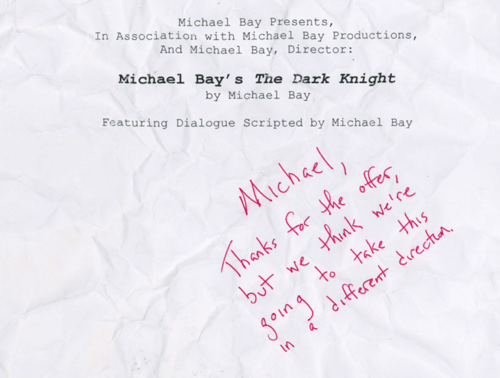

Sun, 24 Apr 2011 04:25:00 · Movie · MichaelBay · transformers · Batman · fail
michael bays rejected the dark knight script

Michael Bay’s Rejected ‘The Dark Knight’ Script (Parody)
This is an old post, but it’s just too good to pass in case there is anyone out there who hasn’t read about it. Apparently, Michael Bay wrote an unsolicited script for Batman, The Dark Knight that was ultimately rejected by Warner Bros. (Thank god for small mercy!).
What prompted me to repost this is because it irks the heck out of me when reading an article about the upcoming Transformers movie 'The Dark Moon’ in which Bay said, “I want to make it up for Transformers 2.” And being the non-believer of Bay, I’d say, “Mate, that’s just one bad movie too many! Stop it already!"
How come bad director like him keep getting funding to make crappy movies? Granted it sold millions, but that doesn’t mean the movie is worth watching. It merely said the bad taste of the majority, like going to McD or KFC.
(by the way, the script is parody… )